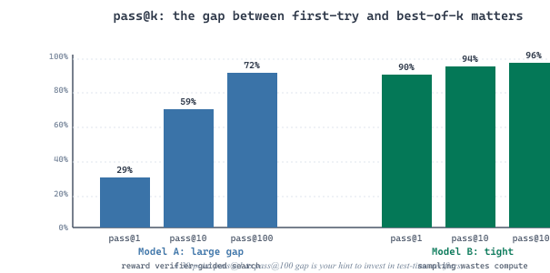

"The test for code is not 'does it look like code'. The test for code is 'does it run, does it pass, and does it survive code review next Tuesday'."
Eval, Vibe-Averse AI Agent
Code generation is the one LLM task where the ground truth is a test suite. You do not need a human judge, you do not need BERTScore, you do not need a reference model: you run the generated code against the tests and either it passes or it does not. That clarity is what made HumanEval the canonical pre-2024 benchmark and what makes SWE-Bench the canonical post-2024 benchmark. But the apparent simplicity hides three persistent problems: contamination (the answers leak into pretraining data), brittleness (small textual variations can pass tests without solving the underlying problem), and scope mismatch (acing 164 short Python problems does not predict success at editing a real repo). This section walks through pass@k as the unifying metric, the four benchmark families (HumanEval, MBPP, SWE-Bench, LiveCodeBench), the contamination scaling problem and the responses to it, and the metrics that go beyond pass rates, edit distance, build success, and lint compliance, that production code-generation systems actually track.
Prerequisites
This section assumes familiarity with the evaluation fundamentals from Section 44.1, particularly the discussion of benchmark contamination, and with basic Python sandboxing for executing untrusted code. Familiarity with the agentic patterns from Chapter 26 is useful when reading about SWE-Bench.
43.4.1 The pass@k Metric
HumanEval has 164 problems, was released in 2021, and has been included by accident in approximately every code dataset since. SWE-Bench Verified exists mainly because HumanEval got memorized, and LiveCodeBench exists mainly because SWE-Bench got memorized, a treadmill the field expects to keep running for as long as code is on GitHub.
The pass@k metric was popularized by the Codex paper (Chen et al., 2021, arXiv:2107.03374). For a given problem, you sample k candidate solutions from the model and check whether at least one of them passes the unit tests. The pass@k for a benchmark is the average of this 0/1 indicator across all problems. The intuition is operational: if a developer is willing to ask the model for k attempts (and is willing to skim each one), the relevant question is whether any one of them works.
A naive estimator of pass@k draws exactly k samples per problem and reports the fraction of problems with at least one passing sample. This estimator has high variance because k is small. The Codex paper introduces an unbiased lower-variance estimator: draw n ≥ k samples, count the number c that pass, and compute pass@k as one minus the probability that a random k-subset contains zero passing samples:
This works whenever n - c ≥ k (otherwise the formula returns 1 trivially, which is correct: if there are more passing samples than the size of any unlucky draw, every k-subset must contain a pass). Using n = 200 with k ∈ {1, 10, 100} is the convention; the variance is dramatically lower than the naive estimator at n = k.
pass@1 measures whether the model gets it right first try. pass@10 measures whether a developer who is willing to inspect ten candidates can find a working one; pass@100 measures whether an automated pipeline with a verifier (tests, type checker, build) can find a working candidate among many. The gap between pass@1 and pass@100 quantifies how much value scaling test-time compute can extract. Models with high pass@100 but low pass@1 (Codex-12B at release: 28.8% pass@1, 72.3% pass@100) reward verifier-guided search. Models with high pass@1 but low pass@100 gap (most 2025 frontier coders: 90%+ pass@1, 95% pass@100) leave little room for sampling to help. Tracking both numbers tells you whether to invest in better sampling or in a stronger model.
The estimator is easy to misuse. If your n samples are not iid (you generate them with diverse prompts, then average), the formula's variance guarantees no longer hold. If your tests are not deterministic (depend on the current time, random seeds, network state), c is noisy and your pass@k is noisy with it. Always run pass@k evaluation with seeded execution and an upper time budget per test invocation.

43.4.2 HumanEval and HumanEval+
HumanEval (Chen et al., 2021) is the founding benchmark of modern code-generation evaluation. It is 164 Python function-completion problems, each consisting of a docstring with examples and a function signature; the model must produce the function body. A typical problem looks like: "Given a list of integers, return the sum of the squares of the odd numbers." Hidden unit tests verify correctness on inputs not shown in the docstring. The benchmark is small, clean, and runs in seconds; pass@1 has become a standard quick-look quality number for any new code model.
The headline metric pass@$k$ is the probability that at least one of $k$ independently sampled solutions passes all hidden tests. Estimating it naively from a small sample is biased downward, so HumanEval reports the unbiased estimator from Chen et al. (2021): generate $n \ge k$ samples, count $c$ that pass, and use
Per-benchmark pass@$k$ is then averaged across all 164 problems. Reporting $n = 100, k \in \{1, 10, 100\}$ has become standard because the same 100 samples produce all three numbers at no extra inference cost.
Suppose model M is run with temperature 0.6 on a single HumanEval problem and produces $n = 100$ samples of which $c = 25$ pass all tests. Plugging into the estimator: $\widehat{\mathrm{pass@}1} = 1 - \binom{75}{1}/\binom{100}{1} = 1 - 0.75 = 0.25$, matching the raw $c/n$ rate as expected. For $k = 10$, $\widehat{\mathrm{pass@}10} = 1 - \binom{75}{10}/\binom{100}{10}$. Numerically, $\binom{75}{10} / \binom{100}{10} \approx 0.054$, so $\widehat{\mathrm{pass@}10} \approx 0.946$. The 25%-per-sample model that looks barely usable at pass@1 succeeds 95% of the time when allowed 10 attempts and a unit-test verifier. The pass@1-to-pass@10 gap is therefore the single most useful diagnostic of "is my model wrong, or is it just noisy?" before deciding whether to invest in a better base model versus a best-of-$N$ verifier loop.
By 2024, HumanEval was saturated. GPT-4 reached 67% pass@1 in early 2023; by mid-2024 GPT-4o, Claude-3.5-Sonnet, and DeepSeek-Coder-V2 all cleared 85%; by 2026, frontier models cluster between 92% and 96%. The remaining gap is partly genuine difficulty (a few problems have ambiguous specifications) and partly test-suite incompleteness: HumanEval's hidden test sets are small (median around eight test cases per problem), so a function that handles the typical case but fails edge cases will still pass.
HumanEval+ (Liu et al., 2023, arXiv:2305.01210) addresses this by augmenting HumanEval's test suite roughly 80x using property-based fuzz testing. The same problems are scored against far more rigorous tests. Pass@1 scores drop substantially: a model that scored 85% on HumanEval typically scores 70-75% on HumanEval+, exposing solutions that were happy-path correct but edge-case wrong. HumanEval+ is the version any serious 2026 evaluation reports alongside the original.
HumanEval problem text appears verbatim in many GitHub repositories (in StackOverflow answers, in study guides, in interview-prep collections, and in derivative repos that reproduce the benchmark). Audits over 2023-2024 found roughly 5-10% of the 164 problems with high textual overlap in common pretraining corpora. The OpenAI report on Codex acknowledged this risk; the field has since treated HumanEval as a contaminated benchmark whose absolute scores cannot be trusted, only differences between models trained on similar data.
43.4.3 MBPP: Mostly Basic Python Problems
MBPP (Austin et al., 2021, arXiv:2108.07732) was released alongside HumanEval as a larger, easier counterpart. The benchmark contains 974 short Python problems, each with a one-sentence natural-language description and three example assertions. Examples include "Write a function to remove all whitespace from a string" and "Write a function to find the volume of a cone given radius and height". MBPP problems are crowdsourced from a pool of programmers (the "Mostly Basic" in the name is sincere) and emphasize standard-library usage more than algorithmic puzzling.
MBPP's role in 2024-2026 evaluation is as a coverage signal that complements HumanEval. Where HumanEval probes algorithmic correctness on isolated functions, MBPP probes whether a model can produce idiomatic uses of common standard-library modules (collections, itertools, re, math). MBPP has a sanitized subset (MBPP-sanitized, 427 problems) that fixes ambiguous specifications and broken test cases. Modern reports cite MBPP-sanitized pass@1.
The HumanEval-MBPP pair has the structural limitation that both benchmarks consist of short, isolated functions. Real software engineering requires reading existing code, understanding cross-file dependencies, and editing modules without breaking other modules. Benchmarks that capture this came later.
43.4.4 SWE-Bench and SWE-Bench Verified
SWE-Bench (Jimenez et al., 2024, arXiv:2310.06770) was the benchmark that finally moved the conversation past function completion. The setup: take 2,294 real GitHub issues from twelve popular Python repositories (Django, Flask, SymPy, Matplotlib, Astropy, requests, scikit-learn, pytest, sphinx, pylint, xarray, pyramid), each with the eventual human-written fix and the test suite that confirmed the fix. The model is given the issue text and the full repo at the parent commit; it must produce a patch that, when applied, causes the previously-failing tests to pass.
This is hard in ways that HumanEval is not. The model must:
- Locate the right file out of hundreds and the right function within that file.
- Understand the existing code, its conventions, and how callers depend on the function under repair.
- Edit multiple files coherently when the fix spans modules.
- Avoid regressions: existing passing tests must continue to pass.
SWE-Bench's metric is resolved rate: the fraction of issues where the model's patch makes the failing test suite pass without breaking any previously-passing tests. Initial 2023 numbers were brutal: GPT-4 with retrieval scored 1.74%, Claude-2 scored 4.8%. The benchmark was clearly measuring something agents could not yet do.
When: evaluating an agentic coding system (Aider, OpenDevin, Claude Code, Cursor's background agent, etc.) rather than a single-shot code model. How: wrap your full agent stack (retrieval, planning, multi-turn editing, test execution) and run end-to-end against SWE-Bench. Compare against the leaderboard's "agent" track, not the "pipeline" track. Watch for: tools timing out (default budget is around 200 LLM calls and 30 minutes per task); Python environment mismatches (each repo pins different dependency versions, requiring containerized execution). Result: a single number that summarizes whether your agent can do real software engineering on real codebases, not just paste algorithms.
SWE-Bench Verified (OpenAI, August 2024, openai.com/swe-bench-verified) released a manually-curated subset of 500 of the original 2,294 instances. The verification was done by professional software engineers, who flagged and removed instances with problems including: ambiguous issue descriptions, fix-required test cases that were too strict (rejected valid alternative fixes), under-specified requirements, and instances whose ground-truth test suite was broken at the parent commit. Verified is the gold-standard subset; 2025-2026 reports almost always cite both the full SWE-Bench and the Verified subset.
The resolved rate on SWE-Bench Verified is the benchmark that has anchored the 2024-2026 coding-agent leaderboard. Initial Verified numbers were around 33% for the best system (Cognition's Devin, late 2024); by mid-2025, Claude-3.5-Sonnet with a custom agent harness reached 49%; by early 2026, the leaderboard frontier reached approximately 70-72% with extensive scaffolding. The gap between the full benchmark and Verified is informative: an agent that scores 50% on Verified and 35% on full is being penalized by problematic instances, not by its own weakness.
Throughout 2024, vendors reported SWE-Bench numbers without consistent harness disclosure. One vendor's "62% on SWE-Bench" used the Verified subset; another's "35% on SWE-Bench" used the full benchmark. The numbers were directly compared in marketing decks and engineering reviews. Fix: the field standardized on a disclosure format: dataset (full/Verified/Lite), agent harness (which scaffolding), max budget (LLM calls and tokens), and pass rate. Lesson: for any code benchmark, the harness is part of the eval. A frontier model with a weak harness can underperform a mid-tier model with a strong harness. Always read the harness description before believing a number.
43.4.5 LiveCodeBench and the Contamination Scaling Problem
The deeper problem behind HumanEval saturation and the SWE-Bench Verified curation effort is data contamination: as more code is scraped into pretraining corpora, benchmark problems and their reference solutions are increasingly likely to have been seen during training. A model that "passes" a contaminated benchmark is doing retrieval, not problem-solving, and the headline pass rate is measuring memory rather than capability.
Contamination has been measured directly. The HumanEval audit found roughly 5-10% of problems with verbatim or near-verbatim matches in The Pile, RedPajama, and StarCoder's training data. SWE-Bench's instances draw from public GitHub repositories whose contents and issue threads are routinely scraped; some fraction of the eventual human-written fixes are in training data too. As models train on ever-more-recent crawls, contamination is monotonically increasing.
LiveCodeBench (Jain et al., 2024, arXiv:2403.07974) is the field's most rigorous answer. It continuously ingests programming-contest problems from LeetCode, AtCoder, and Codeforces, time-stamping each with its release date. To evaluate a model, you select the subset of problems released after the model's training-data cutoff. Because contest problems are novel by construction and released at known dates, post-cutoff subsets are guaranteed contamination-free.
LiveCodeBench's core trick is dead simple: tag every benchmark instance with a release date, and at evaluation time take only instances released after the model's training cutoff. This makes the contamination floor zero by construction (for the post-cutoff subset). The cost is that older models have shrinking eligible benchmark sizes as time passes, and benchmark-vs-benchmark comparisons require care because different models are scored on different subsets. The benefit is decisive: a frontier model with a January 2025 cutoff evaluated on April-November 2025 LiveCodeBench problems has demonstrably never seen them. Other benchmarks have copied this technique (BigCodeBench, LiveBench).
LiveCodeBench reports show frontier models performing markedly worse on the post-cutoff subset than on the pre-cutoff subset of the same benchmark, even after controlling for problem difficulty. The gap (roughly 10-25 percentage points for popular models in 2024-2025) is the field's clearest evidence that contamination has been inflating reported numbers.
43.4.6 A Minimal pass@k Harness
The conceptual machinery of pass@k evaluation is small enough to implement in a few dozen lines. The skeleton below is the evaluation loop used by HumanEval-style benchmarks: load problems, sample solutions, execute each in a sandboxed subprocess against the unit tests, collect pass counts, and apply the unbiased estimator. A production harness adds containerization, timeout enforcement, resource limits, and per-test attribution; the skeleton omits these to keep the structure visible.
# Minimal pass@k harness for HumanEval-style problems.
# WARNING: this executes untrusted code. Wrap the runner in a container in real use.
import subprocess, tempfile, math, json
from pathlib import Path
def unbiased_pass_at_k(n: int, c: int, k: int) -> float:
"""Codex (Chen et al., 2021) unbiased estimator of pass@k.
n: total samples drawn, c: number that passed, k: target k.
"""
if n - c < k:
return 1.0
# 1 - C(n-c, k) / C(n, k)
return 1.0 - math.comb(n - c, k) / math.comb(n, k)
def run_single(code: str, test_code: str, timeout: float = 10.0) -> bool:
"""Execute code+tests in a subprocess; return True if all tests pass."""
with tempfile.NamedTemporaryFile(mode="w", suffix=".py", delete=False) as f:
f.write(code + "\n\n" + test_code + "\n")
path = f.name
try:
result = subprocess.run(
["python", path], capture_output=True, timeout=timeout, text=True
)
return result.returncode == 0
except subprocess.TimeoutExpired:
return False
finally:
Path(path).unlink(missing_ok=True)
def evaluate_pass_at_k(problems, generate_fn, n: int = 20, ks=(1, 10)) -> dict:
"""problems: iterable of {prompt, test} dicts.
generate_fn: callable(prompt) -> code string."""
per_problem_pass_counts = []
for prob in problems:
c = 0
for _ in range(n):
candidate = generate_fn(prob["prompt"])
if run_single(candidate, prob["test"]):
c += 1
per_problem_pass_counts.append((n, c))
results = {}
for k in ks:
per_problem_pass_at_k = [
unbiased_pass_at_k(n_i, c_i, k) for n_i, c_i in per_problem_pass_counts
]
results[f"pass@{k}"] = sum(per_problem_pass_at_k) / len(per_problem_pass_at_k)
return results
# Example
problems = [
{"prompt": "def add(a, b):\n \"\"\"Return a + b.\"\"\"\n",
"test": "assert add(2, 3) == 5\nassert add(-1, 1) == 0"},
]
# results = evaluate_pass_at_k(problems, my_generate_fn, n=20, ks=(1, 10))
# -> {"pass@1": 0.85, "pass@10": 0.97}The harness above runs generated code in a subprocess on the host filesystem. For a teaching example this is acceptable; for any real evaluation it is dangerous. Generated code can delete files, exfiltrate API keys, or fork-bomb your machine. Production code-evaluation harnesses use Docker or Firecracker containers with no network, no host-filesystem access, capped CPU and memory, and strict timeouts. OpenAI's HumanEval repository ships with documented sandboxing requirements; do not run it on a machine you care about without them.
43.4.7 Beyond pass@k: Edit Rate, CodeBERTScore, Build/Lint Signals
pass@k is the headline metric for code generation, but it is not the only metric a production code-assistant team should track. Several complementary metrics capture aspects of code quality that pass/fail unit tests miss.
Code-edit rate: how much a human developer modifies the generated code before merging. A patch that passes tests on the first try but requires extensive renaming, refactoring, or commenting is less valuable than one a developer can merge unchanged. GitHub Copilot's internal metrics report acceptance-rate (was the suggestion accepted?) and edit-rate (how many tokens changed between acceptance and merge). Edit rates correlate with developer satisfaction more closely than raw pass rates do.
CodeBERTScore (Zhou et al., 2023, arXiv:2302.05527) is the code analog of BERTScore: compute contextual embeddings of generated code and reference code, then measure cosine similarity at the token level. It captures semantic similarity that an exact-match metric misses (rename a variable, swap equivalent constructs, get a high score), without requiring executable tests. CodeBERTScore is most useful in domains where running tests is expensive (large repositories), or where multiple valid solutions exist and you want to credit the model for finding any of them.
Build-passes and lint-passes are blunt but practical signals. A generated patch that fails the project's CI build, fails its type checker, or trips its linter will not be merged regardless of whether it nominally passes the unit test for the issue. Production code-assistant evaluations run the full CI pipeline (mypy, pylint, ruff, project-specific tooling) against the patch and report build-pass-rate and lint-pass-rate as separate numbers. These metrics also correlate with the contamination-resistant signal that the model has actually learned the project's conventions.
| Benchmark | Size | Granularity | Metric | Contamination Risk | Best Use |
|---|---|---|---|---|---|
| HumanEval | 164 | Function completion | pass@k | High (saturated) | Quick-look quality check |
| HumanEval+ | 164 | Function completion | pass@k | High (prompts same as HumanEval) | Stress-test edge cases |
| MBPP-sanitized | 427 | Function completion | pass@k | Medium | Standard-library coverage |
| SWE-Bench | 2,294 | Multi-file repo edit | resolved rate | Medium (public GitHub) | End-to-end agent evaluation |
| SWE-Bench Verified | 500 | Multi-file repo edit | resolved rate | Medium (curated, but same source) | Cleanest SWE-Bench signal |
| LiveCodeBench | 500+ (growing) | Algorithmic problem | pass@1 on post-cutoff subset | Low (date-based) | Contamination-resistant capability |
| BigCodeBench | 1,140 | Multi-library function | pass@k | Medium | Realistic library usage |
BigCodeBench (Zhuo et al., 2024, arXiv:2406.15877) is worth mentioning separately. It tests Python problems that require coordinated use of multiple libraries (e.g., NumPy + Pandas + Matplotlib in one solution), a closer match to real data-science and engineering work than the single-library focus of HumanEval and MBPP. It is the benchmark that has best exposed weaknesses in models that memorized common idioms but cannot compose them.
For a production code-assistant project, define a composite metric that weights: pass@1 (correctness), edit-rate (human effort post-acceptance), build-pass-rate (CI compatibility), lint-pass-rate (style compliance), and median latency. Track all five over time; report the weighted composite as your headline. A model that improves pass@1 by 3% while increasing edit-rate by 15% may be a regression in practice; only a composite catches this.
43.4.8 The Contamination Arms Race in Practice
The contamination scaling problem has changed how code-generation evaluation is run in practice. Three norms have emerged in the 2024-2026 period.
Norm 1: Report both contaminated and contamination-resistant numbers. A 2026 model card typically lists HumanEval, HumanEval+, MBPP, SWE-Bench Verified, and the LiveCodeBench post-cutoff subset. The first three are useful for backwards comparability; the last two are the numbers you trust.
Norm 2: Disclose training-data cutoff alongside benchmark scores. A LiveCodeBench number is uninterpretable without a cutoff date. Model cards now report cutoff explicitly so that readers can compute which benchmark subset was eligible.
Norm 3: Avoid public benchmark optimization. Teams that publish code models have begun to hold out portions of their internal evaluation suites from external dissemination, on the rationale that a fully-public benchmark is a fully-contaminated benchmark within a year of release. Anthropic's RE-Bench, OpenAI's internal code-evals, and Google DeepMind's code-eval portfolio all include private subsets reported only as aggregate numbers.
Open Questions in Code-Generation Evaluation (2024-2026):
- Evaluation of long-horizon coding agents: SWE-Bench tasks complete in hours; real software engineering takes days or weeks of agent work. How do we evaluate agents over week-long autonomous sessions? Anthropic's preliminary work on extended-coding evaluations (2025) and the ARC-AGI v2 efforts (2026) are early answers, but the field lacks a standard.
- Multi-language benchmarks: Most benchmarks are Python-only. MultiPL-E and CrossCodeBench extend to Java, Rust, Go, and TypeScript, but the language-specific test-runner infrastructure remains brittle.
- Beyond unit tests: Tests check correctness but not maintainability, performance, security, or readability. Static-analysis-driven evaluation (Snyk-style security scoring, performance-regression detection) is emerging but not standardized.
- Synthetic benchmark inflation: Models can be trained on LLM-generated coding problems that look like benchmark problems. Detecting this kind of indirect contamination (the benchmark problem was never in training, but a synthetic variant was) is an open research direction.
Explore Further: Run a frontier code model against the pre-cutoff and post-cutoff subsets of LiveCodeBench and compute the contamination-inflated gap. The size of the gap is your best in-house measure of how much you should trust the model's HumanEval and SWE-Bench scores.
Objective
Build a code-eval harness that samples n=20 completions per HumanEval+ problem from a model of your choice, runs each generation through the augmented unit tests inside a sandboxed subprocess with a 5-second timeout, and computes the unbiased pass@1 and pass@10 estimators. By the end, your harness should survive infinite loops, recursion explosions, and segfaults without taking the whole run down.
Setup
Download the HumanEval+ dataset (164 problems with augmented tests) from the EvalPlus repo. You need Python 3.11+, an OpenAI key (gpt-4o-mini is cheap enough for a full run, around $2), and a Linux or macOS host (sandboxing on Windows uses different APIs).
pip install evalplus openai psutil tqdmSteps
- Pull the dataset: Use
from evalplus.data import get_human_eval_plusto load the 164 problems. Print one to see the prompt, canonical solution, and augmented tests. - Sample generations: For each problem, call the model with
n=20,temperature=0.8,top_p=0.95. Strip markdown fences, prepend the prompt's function signature, and write each completion togenerations/{task_id}/{i}.py. - Build the sandboxed runner: Use
subprocess.Popenwithresource.setrlimitin a preexec_fn to cap CPU time (5 s), memory (512 MB), and disable network. Capture exit code and stderr; treatTimeoutExpiredand non-zero exits as test failures rather than letting them propagate. - Run the augmented tests: For each generation, write a wrapper script that imports the candidate, runs the EvalPlus test cases, and prints
PASSorFAILon the last line. Run withconcurrent.futures.ProcessPoolExecutor(max_workers=8). - Compute pass@k: Implement the Codex unbiased estimator
1 - C(n-c, k) / C(n, k)per problem, then average across the 164 problems. Report pass@1 and pass@10 with bootstrap 95% CIs.
Expected Output
gpt-4o-mini lands around pass@1 = 0.78 and pass@10 = 0.92 on HumanEval+. The harness should report zero crashes (everything is a clean PASS or FAIL with a labeled cause: timeout, exception, wrong answer).
Extension
Add a Docker-based sandbox (gVisor or runsc runtime) for stronger isolation, and run the same harness against a self-hosted Llama-3.1-8B-Instruct served through vLLM.
- pass@k is the canonical code-generation metric. Use the Codex unbiased estimator with n >> k (typically n=200, k ∈ {1, 10, 100}); the variance reduction over naive sampling is large. Report both pass@1 (first-try correctness) and pass@k for k > 1 (sampling-with-verifier potential).
- HumanEval is saturated and contaminated. Treat it as a backwards-compatible quick-look number; do not use it as the sole signal for a new model. HumanEval+ (augmented test suite) is the more rigorous variant.
- SWE-Bench Verified is the standard for agentic coding evaluation. The 500-problem curated subset is the cleanest signal of real-repo software engineering ability. Always disclose the agent harness alongside the score; a number without a harness is meaningless.
- LiveCodeBench's date-based subset selection is the field's clearest contamination defense. Post-cutoff subsets are contamination-free by construction. Other benchmarks (BigCodeBench, LiveBench) have adopted the same technique.
- Always disclose training-data cutoff. Without it, contamination-resistant numbers cannot be interpreted. Modern model cards make cutoff explicit.
- Track a composite of pass@k, edit-rate, build-rate, and lint-rate. Production usefulness depends on more than pass/fail unit tests; a model that improves pass@1 while bloating edit-rate is a regression in practice.
Exercises
You evaluate a model on 100 problems using n=20 samples per problem. The naive pass@10 estimator and the Codex unbiased estimator both estimate pass@10. Suppose the true pass@10 is 0.6. Compute (roughly) the standard error of each estimator and explain when the unbiased estimator is most valuable.
Answer Sketch
The naive estimator with k=10 samples drawn fresh per problem has Bernoulli variance per problem with p=0.6, contributing sqrt(0.6*0.4/100) ≈ 0.049 to the cross-problem mean. The Codex unbiased estimator at n=20 averages over a larger sample with the binomial-coefficient correction; for moderate per-problem pass rates the per-problem variance is roughly halved, contributing approximately 0.035 to the cross-problem mean. The unbiased estimator is most valuable when (a) sampling is expensive (each sample costs API tokens), (b) k is small relative to n, and (c) per-problem pass rates are intermediate (variance is highest at p=0.5). For pass@1 with n=20 the gain is modest; for pass@10 with n=20 the gain is substantial.
Your team reports 95% pass@1 on HumanEval but only 71% on HumanEval+. List three plausible causes and propose, for each cause, a benchmark or experiment that would discriminate among them.
Answer Sketch
(1) The model is memorizing happy-path solutions to HumanEval problems; HumanEval+'s expanded tests expose this. Discriminate: hold out a contamination-free subset (LiveCodeBench post-cutoff) and confirm the gap holds. (2) The model's solutions are genuinely correct on the typical case but fail on edge cases not covered by HumanEval's small test suites. Discriminate: hand-augment ten problems with edge-case tests, measure whether failures are correlated with edge-case coverage. (3) HumanEval+ tests are over-strict (rejecting valid alternative solutions). Discriminate: manually review 20 failures on HumanEval+ to check whether the failing solutions are actually wrong or merely different.
Write Python pseudocode for a minimal SWE-Bench evaluator that takes a single SWE-Bench instance (repo, parent commit, issue text, expected test list), invokes an agent to produce a patch, applies the patch in a sandboxed clone, runs the test suite, and returns resolved/not-resolved. Identify three failure modes specific to this evaluator (different from HumanEval-style failure modes).
Answer Sketch
Skeleton: clone repo at parent_commit into a sandbox; expose issue_text and repo-listing tools to the agent; call agent.solve() which returns a patch; apply patch via git apply; run tests via repo-specific runner (often python -m pytest path/to/test); record pass/fail for the expected test list and verify no previously-passing tests regressed. Failure modes: (1) Patch applies cleanly but introduces a regression in a test not in the expected list; the metric correctly marks this as failure but the agent will not see the regression in its trajectory unless we feed it back. (2) Repo dependency versions diverge from the parent commit; modern poetry/uv lockfiles freeze deps but legacy repos do not. Solution: use repo-specific dockerfiles from the SWE-Bench package. (3) The expected test list contains tests that depend on network or external services; these are flaky and produce non-deterministic resolved/not-resolved verdicts. Solution: detect and skip network-bound tests during evaluation.
Sketch a contamination audit pipeline for a code benchmark of your choice. Specify the corpus you would search, the matching strategy (exact, n-gram, semantic), and how you would aggregate results into a contamination score that downstream consumers can use to adjust their interpretation of benchmark numbers.
Answer Sketch
Corpus: the largest available web-scale crawl that overlaps the model's training cutoff (Common Crawl, GitHub-Code, StackExchange). Matching: tiered. Tier 1 (exact): for each benchmark prompt, run an exact-string search; flag matches. Tier 2 (n-gram): use 13-gram match counts as in Brown et al. (2020) GPT-3 contamination analysis; flag prompts whose 13-gram coverage in the corpus exceeds a threshold (often 50%). Tier 3 (semantic): embed prompts and corpus chunks with a code-embedding model and flag prompts whose top-k corpus matches have cosine similarity above 0.9. Aggregate: report per-benchmark contamination rates at each tier; produce a contamination-corrected benchmark score by removing flagged prompts and recomputing. Communicate both the original and the corrected score, plus the contamination rate, to downstream consumers.
Design a composite metric for evaluating a code-completion assistant in production. Choose at least four component metrics, define each, propose weights, and discuss how to validate the composite against developer satisfaction surveys.
Answer Sketch
Components: (1) pass@1 on a curated internal benchmark (correctness, weight 0.35). (2) Edit-rate, defined as average Levenshtein distance between accepted suggestion and final merged code, normalized by suggestion length (effort, weight 0.25, lower is better, invert sign). (3) Build-pass-rate on CI for projects where suggestions were accepted (CI compatibility, weight 0.15). (4) Acceptance rate (was the suggestion accepted at all, regardless of edits, weight 0.15). (5) p50 latency (responsiveness, weight 0.10, invert and normalize). Validate: collect monthly developer-satisfaction surveys (NPS-style 0-10) and correlate the composite metric with survey scores; tune weights to maximize R^2 of survey vs composite while keeping each weight bounded so no single metric dominates. Recompute weights quarterly as developer behavior and product context evolve.
What Comes Next
In the next section, Section 43.5: Multi-Modal Evaluation, we extend the evaluation toolkit to vision-language and audio-language models, covering MMMU, VLM-as-judge, hallucination benchmarks for grounded multi-modal generation, and the unique failure modes of cross-modal evaluation.